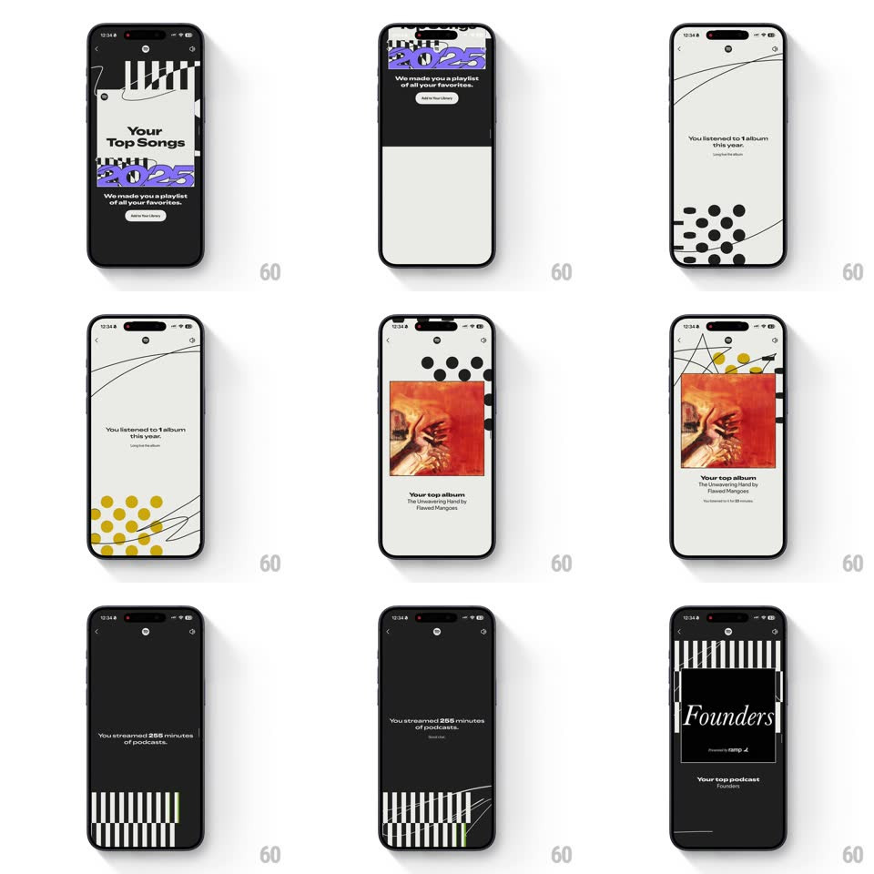

Media
Frame-by-frame

Rebuild this animation 1:1: Spotify Wrapped's album-and-podcast run - the top-songs playlist card, then "You listened to 1 album this year" as dots flip gold and the album art springs in, then the podcast minutes and the Founders card.

Rebuild this animation 1:1: Spotify Wrapped's album-and-podcast run - the top-songs playlist card, then "You listened to 1 album this year" as dots flip gold and the album art springs in, then the podcast minutes and the Founders card.
## Integration
Integration: stack-agnostic spec - springs given as stiffness/damping, timed motions as duration + curve; map every value to your framework and animation library of choice.
## Scene
A Wrapped story sequence: the "Your top songs" numbered list; the "Your Top Songs 2025" playlist card ("We made you a playlist of all your favorites", Add to Your Library pill); a cream scene - "You listened to 1 album this year." over black dots that turn gold, then the album art (The Unwavering Hand by Flawed Mangoes) with "Your top album" and a Share pill; then black: "You streamed 255 minutes of podcasts." over green bars; and the "Founders - Your top podcast" card on stripes.
## Motion spec
Pattern: spring-loaded stat-to-artwork reveals.
- The playlist card slides up over the list (spring ~320/18), its purple 2025 strip sliding in a beat behind the title (120ms), Add pill popping last (scale 0.8 -> 1, spring ~400/15).
- The album scene: copy lines stagger in (150ms apart), then the dot field flips black -> gold in a radial wave from center (250ms) as the dots drift apart; the album art springs up from the dot field (scale 0.6 -> 1, spring ~340/14, visible overshoot) with its caption lines fading up 100ms apart.
- Podcasts: the minute count rolls up (0 -> 255, 700ms, ease-out) as the green bars beneath stagger in (40ms apart, scaleY from bottom); the Founders card then slides up (spring ~320/16), its striped frame drawing on (stroke reveal, 400ms).
- Every scene change rides a full-bleed graphic wipe (dots, bars, or stripes sliding across, 350ms) - patterns carry the cuts.
## Calibration
- The gold flip is the scene's payoff - it must read as the dots becoming the album's palette.
- Artwork springs are bouncy (visible overshoot) - Wrapped never settles politely.
## Reduced motion
Cards fade up (300ms); dots crossfade to gold; no wipes.
## Don't miss
- "1 album" is a joke about singles culture - the copy must stay deadpan and exact.
- The playlist card is functional (Add to Your Library) - not just a recap image.